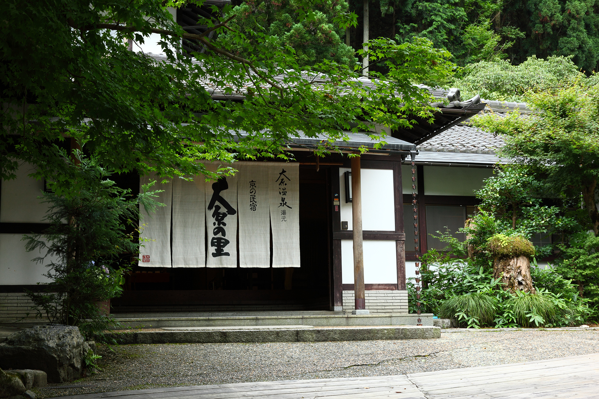

京都大原の山里に息づく、百年の静寂。
京都の北東、三千院や寂光院で知られる大原の里。
澄んだ空気と豊かな緑に包まれたこの地に、私たちは静かに佇んでいます。
百年以上にわたって受け継いできた味噌の文化を守りながら、
旬の食材と大原の温泉で、ただ休むということの深い贅沢さをお届けします。

京都盆地の北東、地下1,175mより湧き出る大原温泉。
弱アルカリ性の泉質は肌をやわらかく整え、
近畿でも稀少なラドンを含む療養の湯です。
露天五右衛門風呂では、大原の森を肌で感じながら、
ただ、時間が流れるのを感じてください。
百年以上続く自家製の手前味噌は、大原のおいしい水と厳選した大豆だけで仕込んだ、当宿の魂。
大豆・米麹・塩のみ、添加物一切なしの、昔ながらのひと皿です。
その味噌を使った鍋料理をはじめ、旬の京野菜と地の食材を丁寧に仕立てた料理で、
大原の四季を召し上がっていただけます。
「 味噌と会話しながら、百年を仕込む。 」
大豆・米麹・塩のみを原材料に、職人が昔ながらの製法でじっくりと仕込む自家製味噌。 辛口の1年味噌、まろやかな2年味噌、伯方の塩を使ったコクある塩味噌など、 大原の土と水が育てた、百年のひと匙です。
京都バス「大原行き」乗車
終点「大原」バス停下車、
徒歩約15分
三条方面へ → 北白川通りを北上
花園橋から国道367号線へ
チェックイン開始（15:30）以降、
ご要望に応じて送迎いたします
京都府京都市左京区大原
Tel. 075-744-XXXX